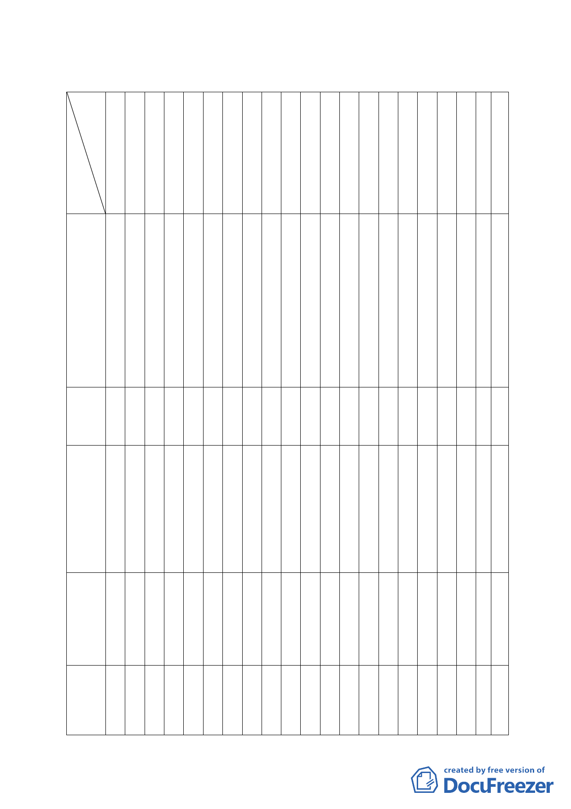

臺北市都市計畫委員會九十五年計畫案專案小組成員名單（※為召集人）
委員
張
委
員
桂
張
委
員
溫
委
員
琇
黃
委
員
書
江
委
員
彥
蘇
委
員
瑛
顏
委
員
愛
邊
委
員
泰
陳
委
員
武
蔡
委
員
淑
錢
委
員
學
孟
委
員
繁
于
委
員
俊
歐
委
員
晉
莊
委
員
武
林
委
員
志
陳
委
員
永
林
委
員
聖
紀
委
員
聰
承
備辦
註人
林樞玲禮霆敏靜明正瑩陶宏明德雄盈仁忠吉
案名
1.變更
臺北孔
廟社教
機構用
地暨孔
廟東側
第三種
住宅區 ※
○ ○○○
為社教
設施用
地（供
臺北孔
廟使
用）計
畫案
2.內湖
慈濟社
會福利 ○ ○ ○ ○ ○ ○ ○ ※ ○
特定專
用區案
3.擬訂
大同區
陳德星
堂保存
區細部
計畫及 ○
※○ ○○○
周邊地
區都市
設計管
制計畫
案。
4.變更
文山區
木柵路
1 段中
興山莊
○
○
○
※
○
○○
○
○
附近地
區主要
計畫案
5.臺北
市文山
區都市
計畫通
○
○○
○○○※
○○○
盤檢討
案
陳
5福
位隆
陳
9
○福
位
隆
張
6
蓉
位
真
高
9
浩
位
然
張
11
○蓉
位
真
一七